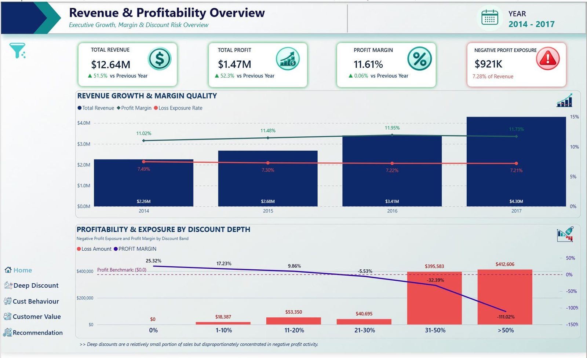
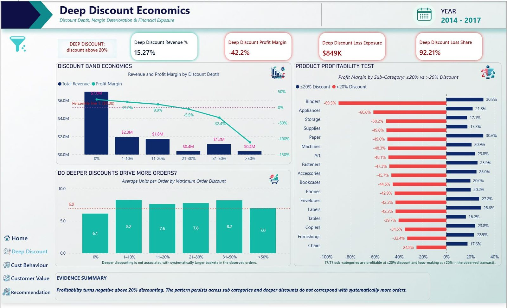
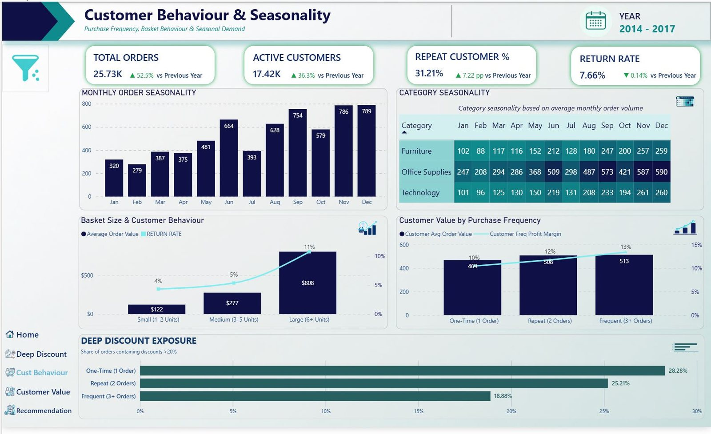
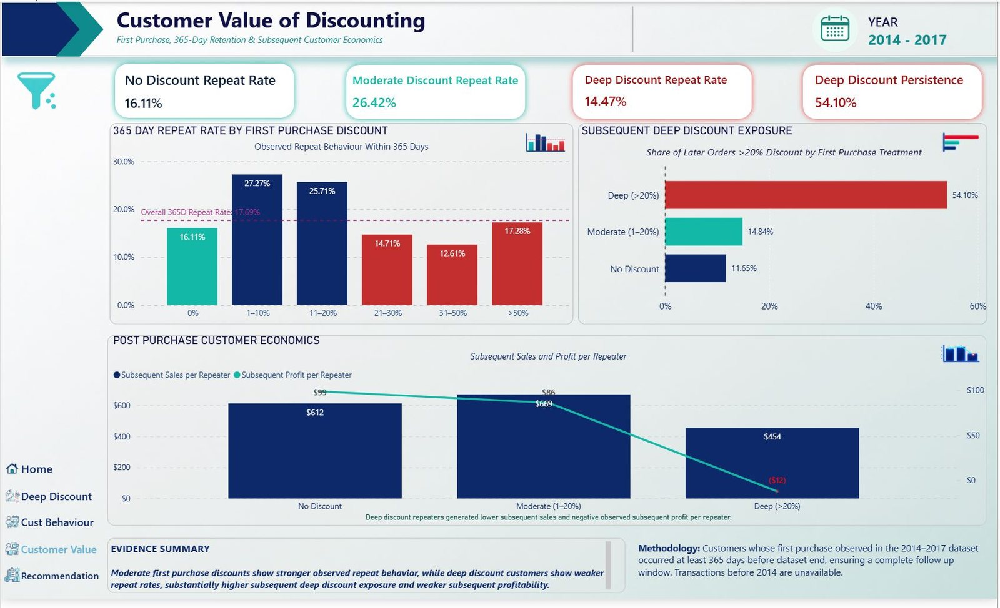
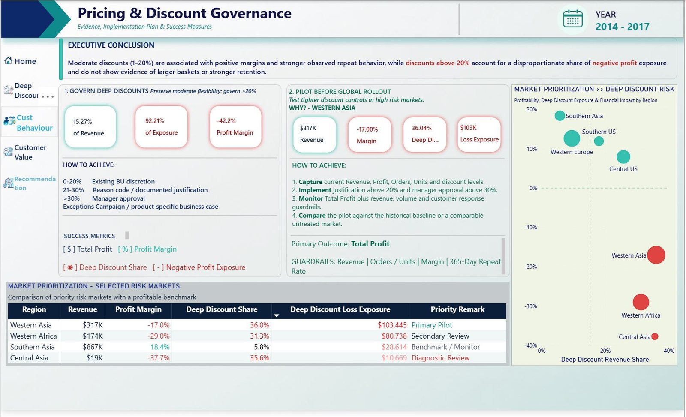

Discount governance dashboard
A five-page Power BI report that tests whether deep discounts earn their cost, and where to pilot tighter controls.
- Role
- Team of six. I designed pages 2 and 3, and contributed to the design of page 4.
- Tools
- Power BI.
- Data
- The same e-commerce retailer, 2014–2017: 51,290 sales lines, 25,728 orders, about 17,400 customers.
The question
How can the retailer reduce margin leakage from deep discounting without losing demand, repeat customers or future customer value? Each of the five report pages answers one part of that question, in order.
The report, page by page
Select a page to open it at full size.










At a glance
- Revenue
- $12.64M
- Profit margin
- 11.61%
- Revenue discounted above 20%
- 15.3%
- Share of loss exposure above 20%
- 92.2%
- Margin on deep-discount sales
- −42.2%
What the report shows
- Margin turns negative at 21–30% off, and about 95% of deep-discount loss exposure sits above 30%.
- Product mix does not explain it. All 17 sub-categories are profitable at 20% off or less and loss-making above it.
- Deep discounts do not buy loyalty. Customers whose first order was discounted 1–20% came back within a year 26.4% of the time; those whose first order was discounted beyond 20%, 14.5%. This is an observed difference, not proof of cause.
What we recommended
- Discounts up to 20% stay with each business unit.
- 21–30% needs a recorded reason, such as clearance, a contract or a campaign.
- Above 30% needs manager approval.
- Pilot the policy in Western Asia first, judged on total profit with revenue, orders and repeat rate as guardrails.
Limits we flagged
- Loss exposure is the total of negative-profit lines. It is not profit "lost to discounting" in a causal sense.
- "First purchase" means the first one observed in 2014–2017; earlier history is not in the data.
- The data has no discount reason codes, campaign IDs or acquisition costs, so acquisition effects cannot be measured.